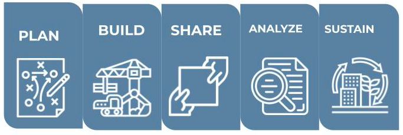

The Evolving Role of a State CDO: A Framework for Today
Although states realize they have much to gain from establishing a CDO and improving their use of data, the only guideposts they have had until now are actions taken by other governments. This report from the State CDO Network outlines both the “why” and the “how” states can implement a successful data program.
State Data Policy Options
We have compiled a series of examples of legislative language that states can draw upon to aid in implementing the six principles of the CDO Framework. These examples are based on existing laws from various states and highlight critical elements of the legislation.

Leveraging Data for Economic Recovery: A Roadmanp for State
An essential element of planning for recovery from the COVID-19 pandemic is taking into account the ways in which separate social programs interact with one another to avoid changing one system and overburdening another. States should lean heavily on data to make these difficult decisions on the path toward economic recovery. By using data to inform policy and improve public understanding of pathways out of poverty, states can efficiently and effectively lead the way to improve economic mobility for their residents.
7 Ways to Boost Data Impact in Response to the Pandemic
The COVID-19 pandemic is affecting every state and illuminates the critical role data plays in their response efforts. The members of the State Chief Data Officers Network, which consists of 25 state Chief Data Officers across the country, are stepping up to support their states’ efforts to use data. Whether understanding supplies of personal protective equipment, which hospitals are nearing capacity, or reporting accurate testing data to the public, state CDOs are leaning in to improve how data are shared and used.